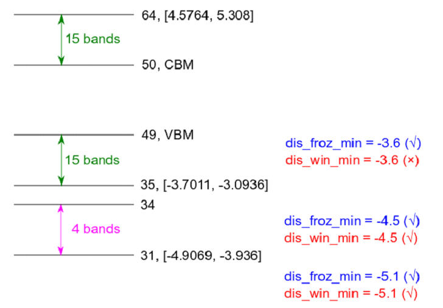
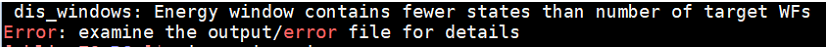
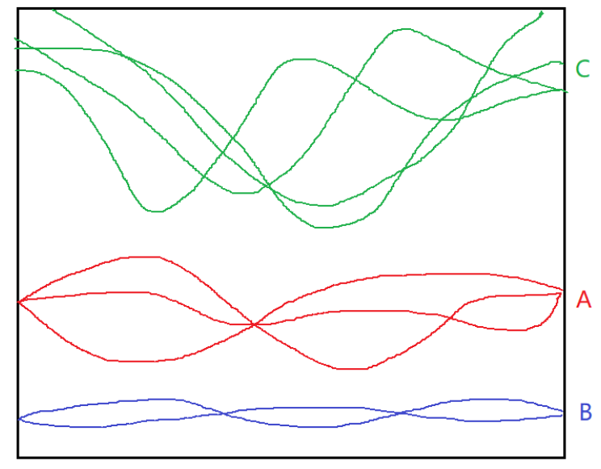
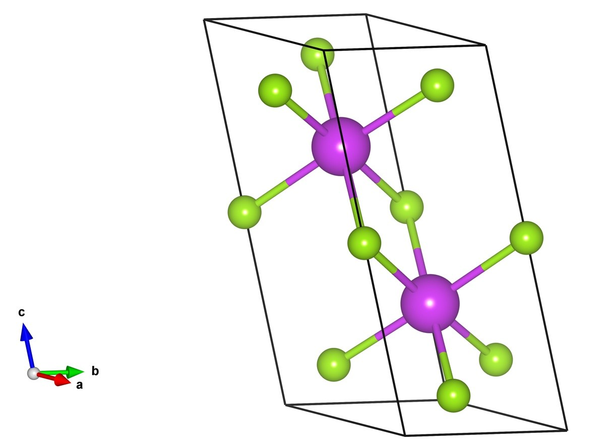
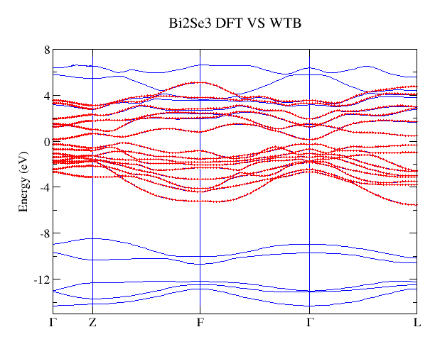
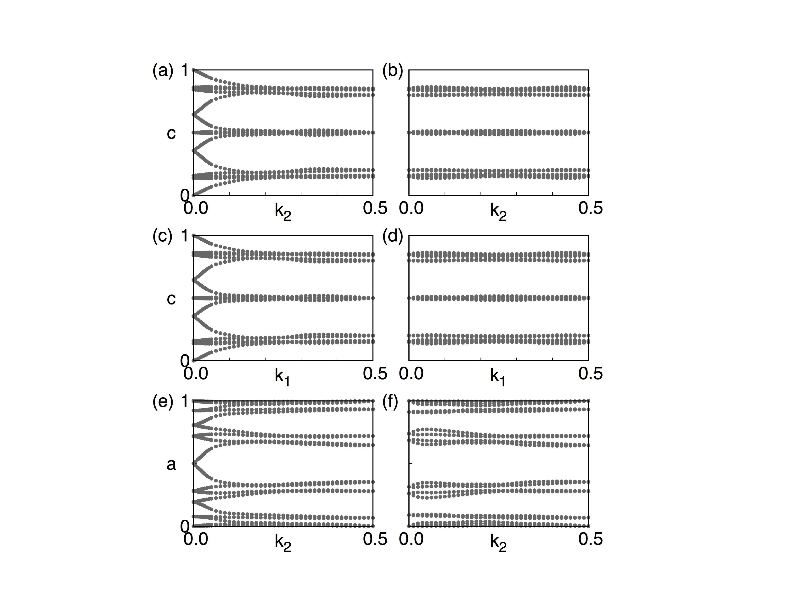
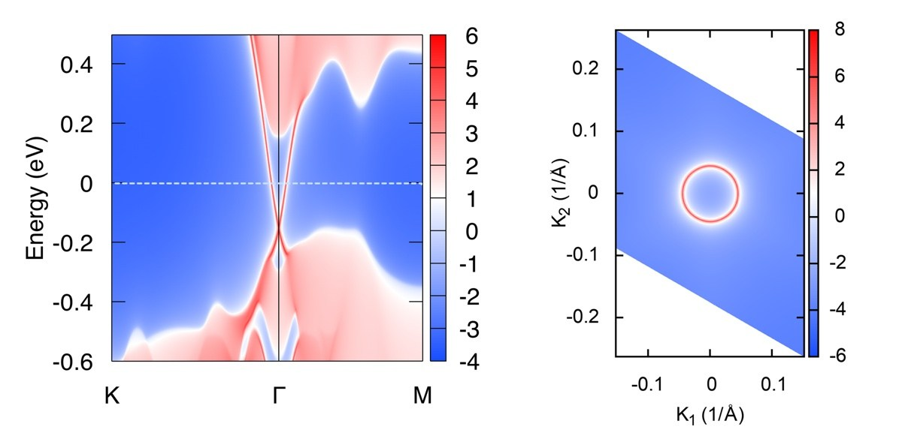
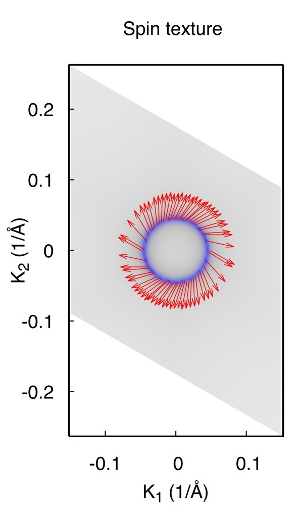

High-quality Wannier functions (WFs) are very useful for physical properties calculations after we obtained the self-consistent charge density from the first-principle calculations. However, for the beginners, it’s not easy to obtain good WFs. Here we would like to introduce a standard way to construct high-quality Wannier functions with first-principle software package and software Wannier90. Here we don’t focus on constructing maximum localized Wannier functions (MLWFs). We only want to construct a good tight-binding model based on WFs that are able to reproduce the band structure in the energy range we are interested in. Here are four criterions of high-quality WFs.
1. Perfect fitting to the DFT bands in the energy range you are interested in.
2. Keep the atomic orbital symmetry.
3. Well localized.
4. As small number of WFs as possible.
There are three important steps to reach four criterions.
1. Choose projectors.
2. Choose disentanglement energy window.
3. Choose frozen energy window.
I would like to take Bi2Se3 as an example. In order to save the computation cost, we don’t take into account the spin-orbit coupling (SOC) effect.
Let’s perform energy band analysis first. Fig 1 is the band structure of Bi2Se3 without considering SOC. The green shaded part is the energy range which we care about. We want to construct a tight binding model which can well reproduce the energy bands in that interested range. However, those band is connected with other bands below and above. Noticeably, there is a big gap around -8.4eV and -6eV. This is a good sign since the bands below this gap is not hybridized with the bands we are interested in. In this case, those bands below the gap are not necessary to be presented in our tight binding model. Eventually, the number of WFs reduce. It fulfills the fourth criterion.
After a first glance of the band structure, we still have to figure out what is the character of the bands in the interested energy range and figure out which bands are highly hybridized with them. This step is called “fatband analysis” where we need to project the atomic orbital onto the Bloch wave functions which is called the projected weight. We project the Bloch wave functions onto the s, p, d atomic orbitals of Bi and Se. The results are shown in Fig 2. Fig 2(a) and (d) show that the energy bands between [-15, -8]eV are dominated by the s orbital of Bismuth and Selenium. Fig 2 (c) and (f) show that the d orbitals of Bi and Se are located above 5eV. Fig 2 (b) and (e) show that the energy range [-6, 5] eV is dominated by p orbitals of Bi and Se. And our interested energy range, indicated as green shade in Fig 1, is in this energy range. Although there is band overlap between p and d orbitals at around 4eV, we still can omit the contribution from d orbitals since they are not high hybridized with p orbitals and can be shifted away through some deformation of the band structure.
After the “fatband analysis,” we choose p orbitals of Bi and Se as projectors for WFs. Then there will be (2 Bi atoms)*(3 p orbitals)+(3 Se atoms) *(3 p orbitals)=15 atomic orbitals, totally 15 WFs without SOC.
begin projections
Bi : p
Se : p
end projectionsThe disentanglement window is a window to extract the target bands. There are two rules to set this window. 1) Not only the target bands should be included in this window, but also the major weight of the projectors should fall into this window. 2) This window should as small as possible in order to reduce the computational cost. Fig 3 gives three choices of the window marked as colored shade. Fig 3(a) is the right choice. Fig 3(b) is a very bad choice since there is one missing band, marked by dashed circle, whose weight comes from the projectors (See Fig 4b and 4e). If this weight is missing, then the spread of the WFs could become large. Fig 3(c) shows a not good choice since it contains unnecessary bands which don’t contain projector’s character.
The frozen window is a window used for disentanglement procedure. The Bloch states will not rotate with other bands out of this window. There are three rules for choosing froz_win. 1) In froz_win, there should be no weights (contributions) coming from other orbitals besides the projectors. 2) The energy range purely coming from the projectors should be included in the froz_win. 3) froz_win should be as large as possible. Fig 4 shows three choices. (a) is a good choice since it fulfill three rules . (b) is a wrong choice since it breaks the first rule. (c) is correct choice but not a perfect one since it doesn’t follow rule 2 and 3.
After the above procedure, you shall get very good WFs with high possibility. Fig 5 shows the band structure comparison between DFT (black lines) and Wannier interpolation (red dots). It shows perfect agreement.
In the end, we would like to share some other tips.
It’s better not to set dis_num_iter too large, 200 is enough for most of the time. If it’s too large, then the Bloch bands could be over mixed.
If you want atomic like WFs, it’s better to set num_iter less than 20. Large number of num_iter would mix the WFs such that the output WFs are not atomic like.
If you find that the spread of WFs are very large or some wiggles in the Wannier interpolated bands, then try to tune the projectors, dis_win and froz_win carefully.
Special for VASP user:
If you are going to construct WFs for a system with SOC, then Please set “ISYM=-1” in the INCAR file if “LWANNIER90 = T” is present. Since there are some bugs in copying spinor wave functions from one k point to the one related by symmetry in VASP, then the quality of WFs would be significantly improved after we turn off this symmetry tag.
d~z2~和d~x2-y2~轨道贡献。有了这些信息，便可指定projections了：begin projections
A:pz
B:dz2;dx2-y2
end projectionsWannier函数个数为28*1+1*2=30。均分之后，各考虑15条价带和15条导带 [1]。为了解纠缠，还需多预留4条价带 [2]，因此需要关注第31-64条能带。如果用QE生成波函数，在第二步计算时(calculation="bands")需指定nbnd = 64。如果用VASP生成波函数，非自洽计算时需指定NBANDS = 64。因为我们只关心第31-64条能带，所以需要把第1-30条能带排除。对应参数设置为：
num_wann = 30
num_bands = 34
exclude_bands = 1-30生成波函数后，通过输出文件或EIGENVAL，确定各能带能量范围如下（以区间表示，单位为eV，均未作任何平移）：

第64条能带能量范围为[4.58, 5.31]，第35条能带（对应num_wann下限）能量范围为[-3.70, -3.09]，第31条能带（对应num_bands下限）能量范围为[-4.91, -3.94]。
outer_window和frozen_window。若不考虑其物理意义，frozen_window取值范围无限制，outer_window内至少包含num_wann条能带。在此例中，dis_win_min要低于第35条能带能量最小值（-3.70 eV），否则报如下错误：
outer_window设置为用exclude_bands排除无关能带后，剩下的能带能量范围，两端再留些余量。此例中为第31-64条能带，对应参数设置为：dis_win_min = -5.0
dis_win_max = 5.4frozen_window则设定为num_wann对应能带的能量范围，两端留些余量。此例中为第35-64条能带，对应参数设置为：
dis_froz_min = -3.8
dis_froz_max = 5.4如此设置，一般能得到较好的拟合结果。
1 . 费米能级上下各取15条能带，是根据fatband大概数出来的。取14条价带和16条导带，或18条价带和12条导带均可，不必十分严格。
num_wann所指定的能带范围把一组完整的能带一分为二，就需要解纠缠。
以上图为例，当num_wann指定的能带范围包含完整的A组和（或）B组价带时，不需要解纠缠。一旦切到了某组价带，或者切到了导带C，就需要解纠缠。实际上，只有在拟合完整的半导体或绝缘体价带时，才不需要解纠缠。对于半导体的导带或金属能带，很难找到一组和其它能带完全分离的能带。这种情况下就需要解纠缠。
解纠缠需要num_bands>num_wann，即额外预留一部分能带。本例中预留了4条价带，这没有什么严格的标准，预留4条导带或2条价带+2条导带均可，也可预留更多能带。
轉載地址：WannierTools教程之拓撲絕緣體---Bi2Se3 - WannierTools - 材料基因論壇 MaterialsGene
以後WannierTools官方的中文教程將會在材料基因論壇發布，歡迎大家參與討論。在所有教程完成之前，請大家閱讀www.wanniertools.com上的說明文檔。
本系列教程將以多個例子的形式來開展，其中包括拓撲絕緣體，Weyl半金屬，Dirac半金屬，Triple point金屬，Nodal line半金屬等等。每當出現一種新的拓撲體系，我們都將嘗試用WannierTools去重複前人的結果，儘可能讓WannierTools適用於所有拓撲體系。
在首個教程中，我們以經典的Bi2Se3三維強拓撲絕緣體體系為例子，來展示如何從第一性原理模擬到構造Wannier函數，最後到利用WannierTools研究拓撲性質的全過程。
WannierTools 是一個基於緊束縛模型的程序包。這個緊束縛模型可以由人工構造，也可以有軟體產生。但是格式是固定的，目前採用的格式是由Wannier90程序包所定義 （請參考Wannier90_hr.dat里的具體格式，後面會陸續完善所有涉及到的細節）。在此我們只介紹如何使用Wannier90程序和VASP構造基於Wannier函數的緊束縛模型wannier90_hr.dat。
首先我們進行第一性原理模擬，軟體選用VASP。由於我們知道Bi2Se3材料的解理面是垂直於c軸的面，因此我們在原包構造的時候就有意將（001）面設置為垂直c軸的面。這樣有助於我們後面的表面態分析。選好的原胞POSCAR為：
Bi2Se3
1.0
-2.069 -3.583614 0.000000
2.069 -3.583614 0.000000
0.000 2.389075 9.546667
Bi Se
2 3
Direct
0.3990 0.3990 0.6970
0.6010 0.6010 0.3030
0 0 0.5
0.2060 0.2060 0.1180
0.7940 0.7940 0.8820
對於的結構示意圖如下

畫一下能帶結構，然後再做一下Fatband分析，了解費米面附近能帶是有哪些成分構成的。對於Bi2Se3，費米面附近的能帶是有Bi原子和Se原子的px,py,pz軌道構成。於是構造Wannier函數的時候，可以選擇這些軌道作為初始投影軌道。
接下來是構造Wannier函數。有不少朋友反映VASP+Wannier90 v1.2在構造含有自旋軌道耦合體系中會失效。目前我沒有碰到類似的問題，從我閱讀VASP5.3—VASP5.4.1源碼的經驗來看，Wannier90 v1.2完全可以和VASP+SOC兼容。 然而官網明確表示VASP和Wannier90 v2.0不兼容。Wannier90 v2.0確實增加了不少功能，不過就構造緊束縛模型這一點來說（也就是生成Wannier90_hr.dat），v2.0和v1.2並沒有什麼區別。 構造Wannier函數的時候，需要在INCAR中加入LWANNIER90 = .TRUE.，另外提供一個wannier90.win文件。適用於Bi2Se3的wannier90.win文件為
num_wann = 30
num_bands = 60
dis_num_iter=1000
num_iter=0
iprint=2
!min of outer window
dis_win_min = -2.0
dis_win_max = 18.0
!inner -
dis_froz_min = -2.0000
dis_froz_max = 5.5000
hr_plot =.true.
begin projections
Bi : px; py; pz
Se : px; py; pz
end projections
spinors = .true.
這裡需要注意的一點是，num_bands必須和你OUTCAR中的NBANDS一致。在並行運行VASP的時候，VASP會根據系統cpu個數和你指定的NBANDS個數來調整真實運行的NBANDS個數，因此需要特別注意一下。
構造好Wannier函數以後，仔細檢查一下wannier90.wout，搜索」Final State」，在這裡可以看到每條Wannier軌道的展寬，由此可以檢查你構造的Wannier函數是否足夠局域。如果有某個Wannier函數的展寬比晶格常數大許多，就表明你的Wannier函數構造不是很理想，需要不斷調節投影軌道，解糾纏窗口以及Frozen窗口等。從這些軌道的中心和展寬也能看出軌道之間的簡併性如何，由此也可以判斷所構造的Wannier函數對稱性如何，這個也會影響後續的分析，特別是表面態的計算。
緊接著，你就可以開始書寫WannierTools的主輸入文件了，目前叫input.dat，以後會改成http://wt.in (WannierTools v2.2之後)。 這裡不具體介紹每一個參數，在說明文檔中有詳細的介紹，中文版的說明文檔正在翻譯中。 input.dat文件有模板，使用的時候直接拷貝然後加以修改。很多內容都可以直接從wannier90.win和wannier90.wout中拷貝。 Bi2Se3的主輸入文件input.dat可以在附件中下載得到。我們可以通過控制輸入文件中的一些參數來實現我們所需要的功能。
1. 計算體能帶，對比VASP計算的能帶和Wannier TB得到的能帶。輸入文件中需要編輯的地方為，
&TB_FILE
Hrfile = wannier90_hr.dat
Particle= electron
/
LATTICE
Angstrom
-2.069 -3.583614 0.000000 ! crystal lattice information
2.069 -3.583614 0.000000
0.000 2.389075 9.546667
ATOM_POSITIONS
5 ! number of atoms for projectors
Direct ! Direct or Cartisen coordinate
Bi 0.3990 0.3990 0.6970
Bi 0.6010 0.6010 0.3030
Se 0 0 0.5
Se 0.2060 0.2060 0.1180
Se 0.7940 0.7940 0.8820
PROJECTORS
3 3 3 3 3 ! number of projectors
Bi px py pz ! projectors
Bi px py pz
Se px py pz
Se px py pz
Se px py pz
&CONTROL
BulkBand_calc = T
/
&SYSTEM
SOC = 1 ! soc
E_FERMI = 4.4195 ! e-fermi
/
&PARAMETERS
Nk1 = 41 ! number k points odd number would be better
/
KPATH_BULK ! k point path
4 ! number of k line only for bulk band
G 0.00000 0.00000 0.0000 Z 0.00000 0.00000 0.5000
Z 0.00000 0.00000 0.5000 F 0.50000 0.50000 0.0000
F 0.50000 0.50000 0.0000 G 0.00000 0.00000 0.0000
G 0.00000 0.00000 0.0000 L 0.50000 0.00000 0.0000
直接運行wann_tools &
這裡需要提到的是如果你不想運行其它功能，請在CONTROL中把其它所有的Flag都設成F，或者刪除，只留下
&CONTROLBulkBand_calc = T
/
運行完成後，可以在當前文件夾下看到bulkek.gnu, bulkek.dat. 使用gnuplot5.0以上版本的軟體，就可以得到bulkek.eps圖。 命令為gnuplot bulkek.gnu 。 下圖是VASP計算的能帶（藍色）和Wannier TB得到的能帶（紅色）對比圖，從圖中可以看出我們構造的Wannier函數能夠很好在費米面附近重複第一性原理的得到的能帶。 
2. 計算Z2數，最新的版本可以直接計算三維絕緣體的拓撲數。
輸入文件為
&TB_FILE
Hrfile = wannier90_hr.dat
Particle= electron
/
LATTICE
Angstrom
-2.069 -3.583614 0.000000 ! crystal lattice information
2.069 -3.583614 0.000000
0.000 2.389075 9.546667
ATOM_POSITIONS
5 ! number of atoms for projectors
Direct ! Direct or Cartisen coordinate
Bi 0.3990 0.3990 0.6970
Bi 0.6010 0.6010 0.3030
Se 0 0 0.5
Se 0.2060 0.2060 0.1180
Se 0.7940 0.7940 0.8820
PROJECTORS
3 3 3 3 3 ! number of projectors
Bi px py pz ! projectors
Bi px py pz
Se px py pz
Se px py pz
Se px py pz
&CONTROL
Z2_3D_calc = T
/
&SYSTEM
SOC = 1 ! soc
NumOccupied = 18 ! Number of occupied Wannier bands
/
&PARAMETERS
Nk1 = 41 ! number k points odd number would be better
Nk2 = 41 ! number k points odd number would be better
/
運行wann_tools&完畢後，可以得到
wanniercenter3D_Z2.gnu, wanniercenter3D_Z2_1.dat wanniercenter3D_Z2_3.dat wanniercenter3D_Z2_5.dat
wanniercenter3D_Z2_2.dat wanniercenter3D_Z2_4.dat wanniercenter3D_Z2_6.dat 共7個文件，同樣通過gnuplot wanniercenter3D_Z2.gnu命令可以得到wanniercenter3D_Z2.eps文件。 結果如下：

這幅圖畫的是Wilson loop（Wannier Charge Center）隨著k點的變化。具體的定義和物理含義大家可以參考Yu Rui et.al(2011), Alexey A. Soluyanov et.al (2011) 兩篇文獻。 首先說明一個概念，我們通常所說的Z2數是在一個2維閉合曲面內定義的一個拓撲數，比如在kx=0的平面內（由於布里淵區的周期性，所以有閉合曲面的概念）。這裡a-f六幅圖分別畫的是在 k1=0.0、 k1=0.5、 k2=0.0、 k2=0.5、 k3=0.0、 k3=0.5平面內的Wilson loop演化圖，從這些演化圖中可以知道每一幅圖的Z2數。規則是：在圖中畫一條從左到右的曲線，數這條曲線和圖中曲線的交叉點個數，如果交叉點個數為奇數，那麼Z2數為1，如果為偶數，那麼Z2數為0。 這個交叉數並不會因為你畫的曲線不同而不同。 知道了這6個數後，我們就可以通過Fu Liang 在2007年提出的方法（Phys. Rev. Lett. 98, 106803）
來判斷這個絕緣體的拓撲指數。 對於Bi2Se3，拓撲指數為(1;000)，根據Fu的定義，我們知道Bi2Se3是強拓撲絕緣體。 這裡可以多談一點，我們計算過程中計算了6個Z2數，然而這六個數並不是各自獨立的，他們滿足一個等式[tex]X_0+X_1=Y_0+Y_1=Z_0+Z_1[/tex].其中X、Y、Z分別對應上面的1、2、3. 有趣的是，如果你計算得到的這六個數並不滿足這個等式的話，那麼恭喜你，你找到了一個Dirac材料。因為Dirac點的出現會改變Z2數，從而破壞了等式。
3. 計算表面態
表面態是拓撲材料的一個重要的特徵，也是理論與實驗之間最直接的橋樑。理論中計算出來的表面態，可以直接與試驗中的ARPES數據相比，從而間接的驗證理論的正確性。 在WannierTools中，我們可以計算任意界面的表面態，這點需要用戶仔細閱讀文檔中關於SURFACE CARD這段。 這裡我們只計算Bi2Se3解理面的表面態， 輸入文件為：
&TB_FILE
Hrfile = wannier90_hr.dat
Particle= electron
/
LATTICE
Angstrom
-2.069 -3.583614 0.000000 ! crystal lattice information
2.069 -3.583614 0.000000
0.000 2.389075 9.546667
ATOM_POSITIONS
5 ! number of atoms for projectors
Direct ! Direct or Cartisen coordinate
Bi 0.3990 0.3990 0.6970
Bi 0.6010 0.6010 0.3030
Se 0 0 0.5
Se 0.2060 0.2060 0.1180
Se 0.7940 0.7940 0.8820
PROJECTORS
3 3 3 3 3 ! number of projectors
Bi px py pz ! projectors
Bi px py pz
Se px py pz
Se px py pz
Se px py pz
&CONTROL
SlabSS_calc = T
SlabArc_calc = T
/
&SYSTEM
SOC = 1 ! soc
NumOccupied = 18 ! Number of occupied Wannier bands
E_FERMI = 4.4195 ! e-fermi
/
&PARAMETERS
Eta_Arc = 0.001 ! infinite small value, like brodening
E_arc = 0.0 ! energy for calculate Fermi Arc
OmegaMin = -0.6 ! energy interval
OmegaMax = 0.5 ! energy interval
OmegaNum = 401 ! omega number
Nk1 = 101 ! number k points odd number would be better
Nk2 = 101 ! number k points odd number would be better
/
SURFACE ! See doc for details
1 0 0
0 1 0
0 0 1
KPATH_SLAB
2 ! numker of k line for 2D case
K 0.33 0.67 G 0.0 0.0 ! k path for 2D case
G 0.0 0.0 M 0.5 0.5
KPLANE_SLAB
-0.1 -0.1 ! Original point for 2D k plane
0.2 0.0 ! The first vector to define 2D k plane
0.0 0.2 ! The second vector to define 2D k plane for arc plots
得到的結果為

4. 計算表面態上的自旋分布
一般拓撲絕緣體都伴隨著強SOC，表面態上的自旋和動量總是鎖定在一起的，形成特殊的Spin-texture。 WannierTools滿足了這一需求，輸入文件中特殊指定的為
&TB_FILE
Hrfile = wannier90_hr.dat
Particle= electron
/
LATTICE
Angstrom
-2.069 -3.583614 0.000000 ! crystal lattice information
2.069 -3.583614 0.000000
0.000 2.389075 9.546667
ATOM_POSITIONS
5 ! number of atoms for projectors
Direct ! Direct or Cartisen coordinate
Bi 0.3990 0.3990 0.6970
Bi 0.6010 0.6010 0.3030
Se 0 0 0.5
Se 0.2060 0.2060 0.1180
Se 0.7940 0.7940 0.8820
PROJECTORS
3 3 3 3 3 ! number of projectors
Bi px py pz ! projectors
Bi px py pz
Se px py pz
Se px py pz
Se px py pz
&CONTROL
SlabSpintexture_calc = F
/
&SYSTEM
SOC = 1 ! soc
E_FERMI = 4.4195 ! e-fermi
/
&PARAMETERS
Eta_Arc = 0.001 ! infinite small value, like brodening
E_arc = 0.0 ! energy for calculate Fermi Arc
Nk1 = 101 ! number k points odd number would be better
Nk2 = 101 ! number k points odd number would be better
/
SURFACE ! See doc for details
1 0 0
0 1 0
0 0 1
KPLANE_SLAB
-0.1 -0.1 ! Original point for 2D k plane
0.2 0.0 ! The first vector to define 2D k plane
0.0 0.2 ! The second vector to define 2D k plane for arc plots
結果為
Note： 計算Spin texture時，我們假定你構造的經束縛模型的基矢自旋上和自旋下沒有耦合在一起。 這個依賴於你構造的Wannier函數的質量。 如果對此計算不放心，可以結合第一性原理計算和Wannier90進行spintexture計算。

總結： Bi2Se3是一個標準的例子，每一個進入拓撲材料領域的人都必須要學習這一典型範例。 具體的文章請參考張海軍教授的文章（Topological insulators in Bi2Se3, Bi2Te3 and Sb2Te3 with a single Dirac cone on the surface http://dx.doi.org/10.1038/nphys1270）。還有一些功能可以用於計算QPI能譜（STM傅里葉變換譜）還有待用戶自行測試。